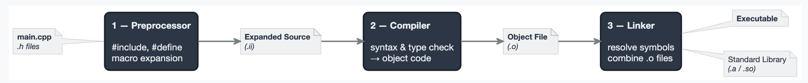
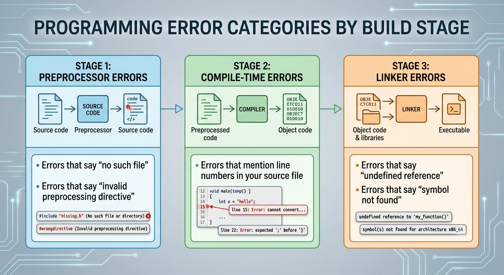
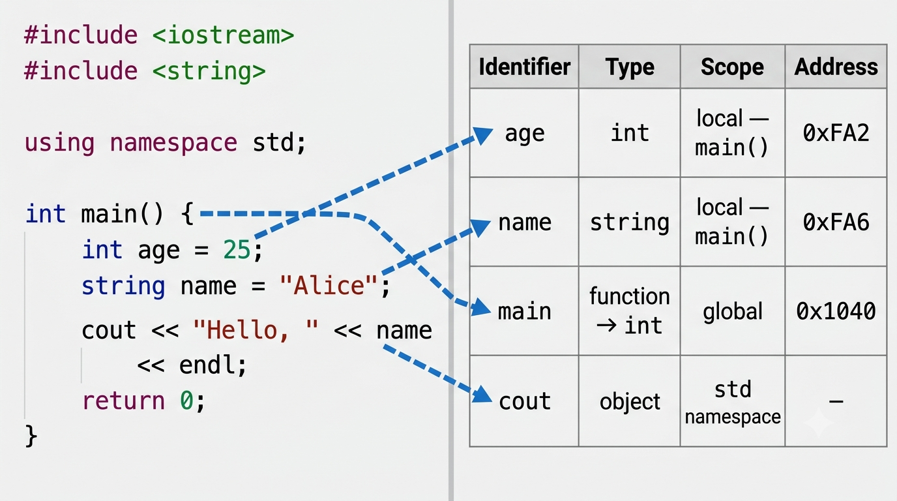
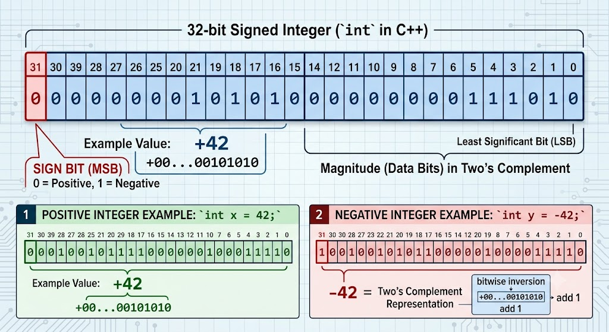
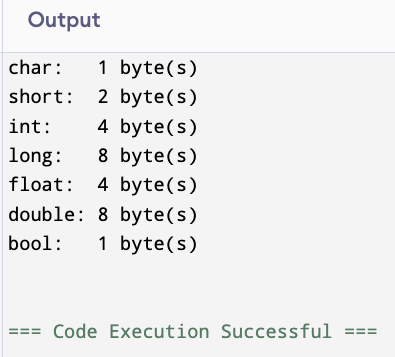

C++
#include, #define, and macro directives before the compiler ever sees your code.
#.#include by inserting the full contents of the header file verbatim.#include <file> — inserts a header file’s contents verbatim at that point in the source.#define NAME value — textual substitution; every occurrence of NAME is replaced before compilation.#pragma once — prevents a header from being inserted more than once per translation unit..cpp file → one .o object file.error: expected '{' before 'cout'error: invalid conversion from 'const char*' to 'int'error: 'count' was not declared in this scope.o object files into a single executable.cout from <iostream>)..cpp file is compiled independently — it is called a translation unit..cpp file at a time and has no knowledge of other .cpp files until linking..h files so the preprocessor can copy them into every .cpp that needs them.
Static typing is a key C++ strength: an entire class of bugs that would appear only at runtime in Python or JavaScript are caught at compile time in C++.

int x = "hello", the compiler looks up x in the table, sees int, and rejects the string.count, the compiler searches from the innermost scope outward.count.error: 'count' was not declared in this scopex in this scope.error: redeclaration of 'int x'age is an int, but the assignment provides text.error: invalid conversion from 'const char*' to 'int'What happens when we ask the computer to move data from one type to a different type variable?
When two operands of different types appear in an expression, the lower-ranking type is promoted to the higher before the operation executes.
The result of a mixed-type expression follows the higher-ranking operand.
| Rank | Type |
|---|---|
| 1 (highest) | long double |
| 2 | double |
| 3 | float |
| 4 | unsigned long long |
| 5 | long long |
| 6 | unsigned long |
| 7 | long |
| 8 | unsigned int |
| 9 (lowest) | int |
char, short, and unsigned short are automatically promoted to int in any expression.// 3-7x.cpp — casting & expressions
#include <iostream>
using namespace std;
int main()
{
int books, months;
double booksPerMonth;
cout << "How many books: ";
cin >> books;
cout << "How many months to read them? ";
cin >> months;
booksPerMonth = books / months; // integer division — decimal dropped!
cout << "That is " << booksPerMonth << " books per month.\n";
return 0;
}static_cast — the C++ waystatic_cast<TargetType>(value) is the preferred form for numeric conversion.(TargetType)value — carried over from C.This is a very old style. It’s hard to read with modern code.
All three convert 3.7 to 3, but static_cast is the form we write in modern C++.
static_cast<> to make conversions explicit and intentional.int uses 31 bits for magnitude and 1 bit for sign.
unsigned int uses all 32 bits, doubling the positive range.| Type | Minimum | Maximum |
|---|---|---|
int (signed) |
−2,147,483,648 | +2,147,483,647 |
unsigned int |
0 | +4,294,967,295 |
short (signed) |
−32,768 | +32,767 |
unsigned short |
0 | +65,535 |
size_t (unsigned) when matching the return type of .size() on containers.int, short, and long.-Wsign-compare to your build flags (included in -Wall).g++ -Wall -Wextra myprogram.cppwarning: comparison of integer expressions of different signedness:
'int' and 'unsigned int' [-Wsign-compare]-Wall and address sign-comparison warnings rather than casting them away.numeric_limits — querying type boundariesstd::numeric_limits<T> from <limits> provides the exact min and max for any numeric type.INT_MAX macros from <climits> — works with any type including user-defined ones.#include <limits>
#include <iostream>
using namespace std;
int main()
{
cout << "int max: " << numeric_limits<int>::max() << "\n";
cout << "int min: " << numeric_limits<int>::min() << "\n";
cout << "uint max: " << numeric_limits<unsigned int>::max() << "\n";
cout << "double max: " << numeric_limits<double>::max() << "\n";
}a > INT_MAX - b, then a + b would overflow.int or long long and validate inputs to ensure they stay in range.unsigned and know that decrement below zero wraps.numeric_limits<T>::max() rather than hardcoded values.numeric_limits<T> to query type boundaries portably.int is a different size on a different machine?int, short, and long have minimum guaranteed sizes but no maximum.int is 4 bytes on most modern desktops, but 2 bytes on some embedded platforms.long is 8 bytes on 64-bit Linux but 4 bytes on 64-bit Windows.int x and assuming it is always 32 bits is a portability bug.<cstdint>| Signed | Unsigned | Width |
|---|---|---|
int8_t |
uint8_t |
8 bits |
int16_t |
uint16_t |
16 bits |
int32_t |
uint32_t |
32 bits |
int64_t |
uint64_t |
64 bits |
If the platform cannot provide that exact size, the type does not exist — you get a compile error rather than silent data corruption.
int and long are fine.size_t?size_t is the unsigned integer type returned by sizeof() and by .size() on any container.size_t for loop indexesint to size_t triggers a sign-comparison warning.size_t for the loop counter eliminates the warning and is semantically correct — an index into a container cannot be negative.<cstdint> also defines performance-oriented variants:
int_fast32_t — at least 32 bits; the fastest available type of that width on the platform.int_least8_t — the smallest type with at least 8 bits.int32_t) unless you have a specific reason to choose otherwise.size_t for sizes, indexes, and anything that measures memory or container length.int is fine.sizeof operator — the only portable way to measure memory.size_t.sizeof operatorSizes are not mandated by the standard and vary by platform and compiler. These are typical on a 64-bit system:
| Type | Typical Size |
|---|---|
char |
1 byte |
short |
2 bytes |
int |
4 bytes |
long |
8 bytes |
float |
4 bytes |
double |
8 bytes |
bool |
1 byte |
| pointer | 8 bytes |
Always use sizeof rather than hardcoding these values.
long is 4 bytes on Windows (MSVC) and 8 bytes on Linux (GCC/Clang).#include <iostream>
using namespace std;
int main()
{
cout << "char: " << sizeof(char) << " byte(s)\n";
cout << "short: " << sizeof(short) << " byte(s)\n";
cout << "int: " << sizeof(int) << " byte(s)\n";
cout << "long: " << sizeof(long) << " byte(s)\n";
cout << "float: " << sizeof(float) << " byte(s)\n";
cout << "double: " << sizeof(double) << " byte(s)\n";
cout << "bool: " << sizeof(bool) << " byte(s)\n";
return 0;
}#include <iostream>
using namespace std;
int main()
{
cout << "char: " << sizeof(char) << " byte(s)\n";
cout << "short: " << sizeof(short) << " byte(s)\n";
cout << "int: " << sizeof(int) << " byte(s)\n";
cout << "long: " << sizeof(long) << " byte(s)\n";
cout << "float: " << sizeof(float) << " byte(s)\n";
cout << "double: " << sizeof(double) << " byte(s)\n";
cout << "bool: " << sizeof(bool) << " byte(s)\n";
return 0;
}
sizeof is the portable, compile-time way to determine memory size.static_cast<> to make conversions explicit.-Wall to catch it.int32_t and friends when exact width matters; use size_t for sizes and indexes.sizeof is the only portable way to measure type size; struct padding means size ≠ sum of members.cout and cin in depth<iostream> before using cout — forgetting it is a Stage 1/2 error, not a logic error.-Wall -Wextra to enable all common warnings at Stage 2..cpp file in your build command, not a syntax mistake in your source..cpp file is compiled independently — you cannot rely on the compiler knowing about another file’s contents..cpp files that include it.#include <iostream>?-Wshadow to catch cases where a local variable shadows a global.'y' was not declared in this scope / redeclaration of 'int x'.static_cast<double>(intVar) to get decimal division from integer operands.sum / count when both are int and expecting a decimal result.(int)x in new code — prefer static_cast<int>(x).int a = 7, b = 2; double r = a / b; cout << r;static_cast<int>(3.9)? What is static_cast<int>(-3.9)?numeric_limits<T>::max() rather than magic numbers like INT_MAX in production code.int for a loop that accumulates values beyond 2 billion.unsigned int x = 0; x--; cout << x;? Explain why.numeric_limits<int> to print the min and max for int.int by default; switch to unsigned only when the value genuinely cannot be negative..size() — use size_t or an explicit cast.-Wall and address every sign-comparison warning.unsigned int u = -1 causes a compile error — it compiles and stores UINT_MAX.-1 < (unsigned int)1? Verify by compiling and running.-Wsign-compare produce? Trigger it intentionally..size() return an unsigned type? What would change if it returned int?int32_t (not int) when writing data to a binary file or network socket.size_t for all container indexes and sizeof results.<cstdint> explicitly whenever you use fixed-width types.int in a binary file format and assuming it is always 4 bytes.int and size_t in comparisons without an explicit cast.uint8_t for character output — cout treats it as a binary value, not a character.int32_t, uint64_t, and size_t using sizeof.int8_t to store the value 200? Explain.int_fast32_t instead of int32_t?sizeof instead of hardcoded byte counts — even if you are “sure” of the size.sizeof(arr) / sizeof(arr[0]) for static array element count, but prefer std::array or std::vector in new code.char followed by an int. Print sizeof. Then reverse the order. Compare.sizeof("hello") return? Explain why.CISP 400 · Fowler